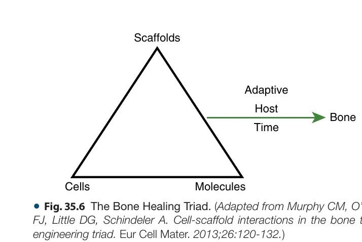
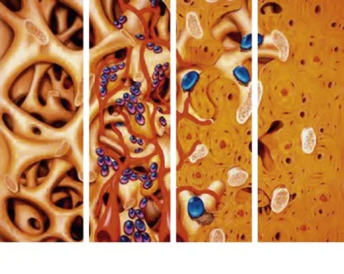

نسخه استخراجشده؛ ترجمه یا تأیید علمی انجام نشده است. وضعیت: captured
ویژگیهای مادهی جایگزین استخوان ایدهآل را میتوان در یک فهرست روشن خلاصه کرد. یک مادهی ایدهآل باید:
۱. از نظر بیومکانیکی پایدار باشد.
۲. در بازهی زمانی مناسب تجزیه شود.
۳. خواص استئوکانداکتیو، استئوژنیک و استئواینداکتیو داشته باشد.
۴. محیط مساعدی برای ورود عروق خونی و سلولهای استخوانساز فراهم کند.
و نکته این است که هیچ مادهای هر چهار ویژگی را در بالاترین حد ندارد. برای همین انتخاب ماده همیشه یک معاوضه است، نه یافتن بهترین.
سه سازوکار را از هم جدا کن:
استئوژنز — ماده خودش سلولهای زندهی استخوانساز دارد. فقط استخوان اتوژن این ویژگی را دارد.
استئواینداکشن — ماده سلولهای میزبان را تحریک میکند تا به سلول استخوانساز تمایز یابند.
استئوکانداکشن — ماده داربستی فراهم میکند که استخوان تازه روی آن رشد کند. این پایهایترین ویژگی است و بیشتر مواد آن را دارند.
و یک هشدار مهم دربارهی افزودنیها: موادی که اثر استئواینداکتیو DFDBA را تقویت میکنند، بهتنهایی رشد استخوان تازه را تحریک نمیکنند. یعنی تقویتکننده جایگزین مادهی اصلی نمیشود. پلاسمای غنی از پلاکت و سایر فرآوردههای خون خود بیمار نمونههایی از همین دستهاند.

یک مادهی پیوند فقط ماده نیست؛ فضایی است که سلولها و عروق باید در آن حرکت کنند. و این فضا سه منبع دارد:
فاصلهی ذرات (اگر ماده از نوع پودری باشد)، ماکروتخلخل ماده، و میکروتخلخل آن.
و عدد کلیدی: ماکروتخلخل — یعنی اندازهی منفذ بیش از ۱۰۰ میکرومتر — معمولاً برای تسهیل استئوژنز و آنژیوژنز لازم است.
به این عدد دقت کن: مسئله فقط وجود منفذ نیست، اندازهی آن است. منفذ کوچکتر از این آستانه اجازهی ورود رگ خونی را نمیدهد — و بدون رگ، سلول استخوانساز نمیتواند زنده بماند.
و همینجا به آنچه در یونیت ۱۴ خواندی وصل میشود: در مرحلهی آنژیوژنیک اولیه — حدود یک هفته پس از کشیدن — تشکیل رگ خونی آغاز میشود و در گرافت ادغام میشود. مادهای که ماکروتخلخل کافی نداشته باشد، دقیقاً همان ورود را مسدود میکند.
و ماکرومنافذ باید به هم پیوسته باشند — منافذ بههمپیوسته برای گردش مایعات بدن و مهاجرت سلول به مرکز ماده ضروریاند. نمونهی طبیعی ماکروتخلخل: فضای مغز استخوان که در بخش کنسلوس با ترابکولاسیون ساخته میشود، یا فاصلهی بینذرهای که هنگام قرار دادن گرافتهای ذرهای ایجاد میشود.
عدد دوم — میکروتخلخل. منافذ کوچکتر از ۱۰ میکرومتر هم اهمیت دارند: بر توزیع مایع و جذب پروتئین اثر میگذارند، و نیروی مویینگی ناشی از آنها میتواند چسبندگی سلولهای مرتبط با استخوان به سطح داربست را بهبود دهد و حتی سلولها را به نفوذ در منافذی کوچکتر از خودشان وادار کند.
پس دو مقیاس تخلخل، دو کارکرد متفاوت دارند: ماکرو راه ورود عروق و سلول است، میکرو سطحی است که سلول به آن میچسبد.
نتیجهی عملی: وقتی مادهای را ارزیابی میکنی، دو پرسش جدا بپرس: از چه ساخته شده؟ و چه فضایی میسازد؟ مادهی درست با تخلخل نامناسب، کار نمیکند.
